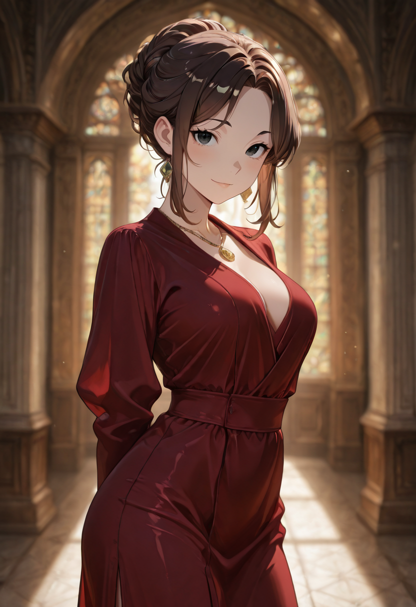
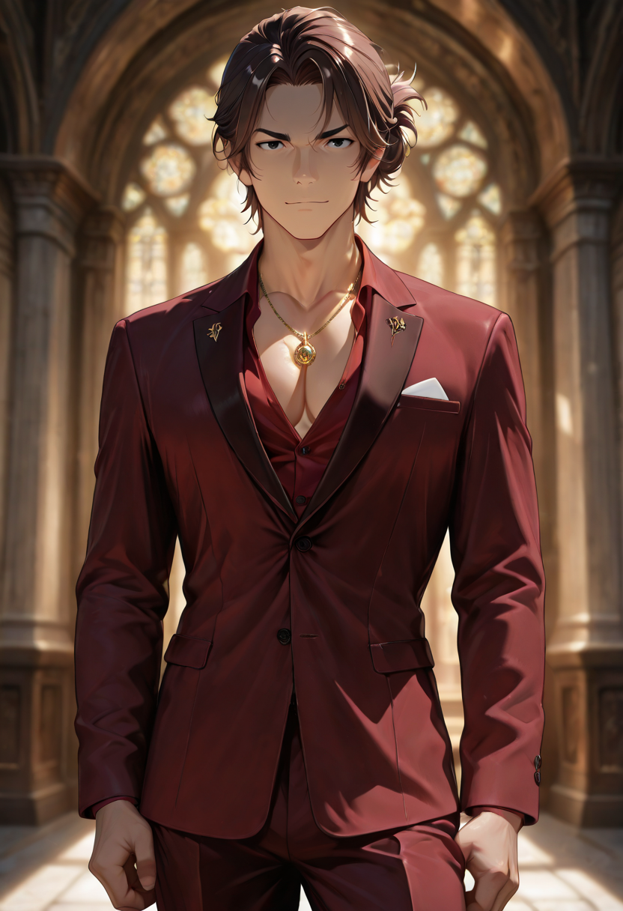

What Aristocracy Becomes
The Noble survived her life as a military commander through a combination of tactical clarity and an aristocrat's complete comfort with giving orders that she would not necessarily follow herself. She was not a coward. She understood leverage , that a commander who dies with her troops is a commander the troops no longer have. She calculated continuously and survived continuously, and then died not in battle but of something ordinary and undramatic, which she regarded as a significant injustice.
Malicott offered her a second command and she accepted before the question was finished. The Amber Sentinels is her formation: ranged units, precision specialists, guards who understand that their role is to create conditions, not engage directly. The Noble does not fight at the front. She coordinates from behind the formation with complete lines of sight and no hesitation about redirecting fire.
She is, by most measures, the most professionally effective Officer in the entire Empire. She is also the one her troops are most likely to complain about in private, because she is excellent and she knows it and does not pretend otherwise. Malicott finds this refreshing. The Arborei Patrol finds her exhausting. Everyone agrees the results are very good.
Tactical Data

Commanded Shot
Base
Coordination
Active
Tactical Presence
Passive
Suppression Signal
UltimateGallery